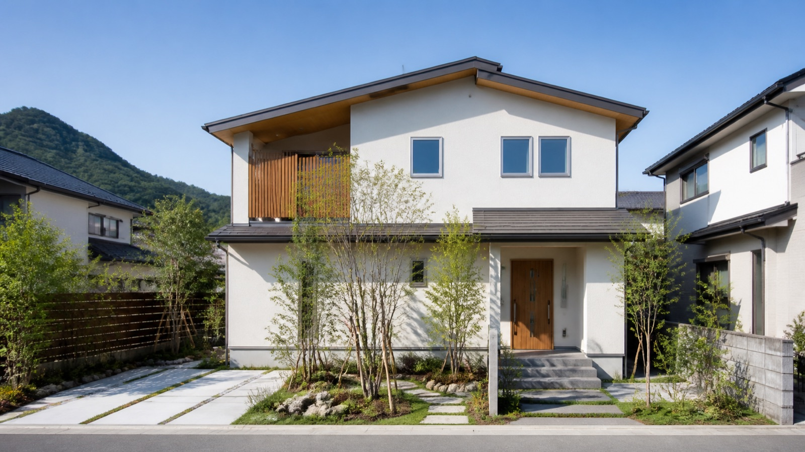

仲介による売却
購入希望者を探し、条件を調整する方法です。市場の反応を見ながら進めるため、成約までの期間や価格は売出条件・市場状況によって変わります。

SELLING OPTIONS
不動産の売却では、価格だけでなく時期や手間も大切です。所在地や物件の状態、ご事情を伺い、条件を比較できる形でご説明します。
購入希望者を探し、条件を調整する方法です。市場の反応を見ながら進めるため、成約までの期間や価格は売出条件・市場状況によって変わります。
不動産会社が直接購入する方法です。時期や現況での引き渡しを相談しやすい場合がありますが、価格や対応の可否は物件調査後にご案内します。
売却するか未定でも構いません。査定価格だけでなく、必要となる調査、費用、売却方法を検討するうえでの注意点を整理します。
PREPARATION
古い建物や荷物が残る物件も、まずはその状態をご相談ください。手を加える前に、現況での売却と費用をかける方法を比較することが大切です。
資料が揃っていなくてもご相談いただけます。査定額は成約価格を保証するものではありません。
FLOW
所在地と状況を確認し、必要な調査を行います。
価格の考え方と条件を説明します。進めるかどうかは、ご納得いただいたうえでご判断ください。
仲介では販売活動を行います。条件調整、契約、お引き渡しまでの流れをご案内します。
Q & A
売却・査定のご相談は無料です。契約や取引に伴う費用は、進め方に応じて個別にご案内します。
所在地と物件の概要をお知らせください。エリアや物件の内容を確認して、対応の可否をご案内します。
まずは状況をお聞かせください。権利関係などの確認が必要な場合は、専門家への確認事項も整理しながら進めます。
CONTACT SHINSEI
分かる範囲の情報からで大丈夫です。
10:00〜20:00／火曜日・水曜日定休
EXPLORE MORE
EASY CONSULTATION
物件の種類・市区町村・面積から、かんたん査定相談。
現在は相談文の作成機能です。自動の金額表示は行っていません。